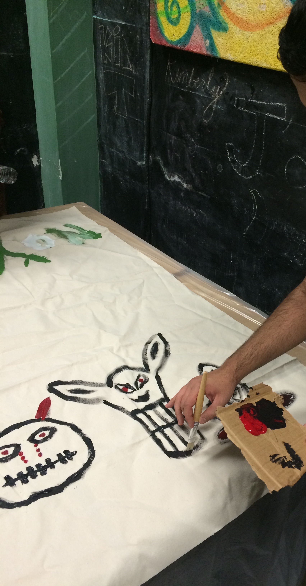

Unleashing Creativity in the Spooky Spirit: Drawing at a Halloween Event
Oct 31, 2016
Welcome, fellow art enthusiasts, to a blog that celebrates the fusion of
creativity and the spooky spirit of Halloween. In this article, we'll
delve into the magical world of drawing at a Halloween event. Join me as
we explore the enchanting atmosphere, embrace the eerie inspiration, and
unleash our imaginations to create hauntingly beautiful artworks.

The Atmosphere of Mystery
Stepping into a Halloween event is like entering a realm where
imagination runs wild. The air is filled with excitement and
anticipation as participants don their costumes, transforming themselves
into witches, vampires, ghosts, and other fantastical creatures. As an
artist, this vibrant and mysterious ambiance fuels our creativity and
sets the stage for an incredible drawing experience.
Embracing Spooky Inspiration
Halloween offers a treasure trove of inspiration for artists. From
intricate pumpkin carvings to elaborate costumes, there is no shortage
of spooky subjects to bring to life on paper. Take a stroll through the
event, immerse yourself in the macabre displays, and let your
imagination run wild. Capture the twisted beauty of a haunted house, the
ethereal glow of a jack-o'-lantern, or the haunting gaze of a masked
reveler. The possibilities are endless, and the only limit is your
imagination.
Interactive Art Stations
Many Halloween events feature interactive art stations where you can
unleash your creativity. These stations may offer various materials such
as sketchbooks, pencils, markers, and paints, allowing you to bring your
artistic visions to life. Take advantage of these opportunities to
connect with other artists, exchange ideas, and share your love for
Halloween-inspired art.
Participate in Art Contests
Some Halloween events organize art contests with themes related to the
season. These contests provide a platform for artists to showcase their
skills and compete with fellow creatives. Whether it's a drawing
contest, a pumpkin carving competition, or a costume design challenge,
participating in these contests not only allows you to display your
talent but also immerses you in the spirit of friendly competition and
community engagement.
Sharing the Experience
Don't forget to capture and share your Halloween drawing experience with
the world. Snap photos of your artworks, the event decorations, and
fellow artists at work. Share your creations on social media platforms,
art forums, or your personal blog to inspire and connect with other art
enthusiasts. Engaging with a wider community helps you grow as an artist
and fosters a sense of camaraderie among fellow Halloween art lovers.
Drawing at a Halloween event is a delightful fusion of creativity and
the spooky spirit. It's an opportunity to immerse yourself in an
enchanting atmosphere, embrace the eerie inspiration that surrounds you,
and unleash your imagination onto paper. Whether you participate in
interactive art stations, join art contests, or simply draw in the
company of fellow artists, this experience is sure to ignite your
artistic passion and bring Halloween-themed creations to life. So, grab
your art supplies, venture into the realm of Halloween, and let your
imagination soar in the darkest corners of your artistic mind.